"How many samples do I need to ...?" This is a common question in statistics. This demonstration describes how to use Statistics Toolbox functions to answer this question for several problems.
Just to introduce some concepts, let's consider an unrealistically simple example where we want to test a mean and we know the standard deviation. Our data are continuous, and can be modeled with the normal distribution. We need to determine a sample size N so that we can distinguish between a mean of 100 and a mean of 110. We know the standard deviation is 20.
When we carry out a statistical test, we generally test a null hypothesis against an alternative hypothesis. We find a test statistic T, and look at its distribution under the null hypothesis. If we observe an unusual value, say one that has less than 5% chance of happening if the null hypothesis is true, then we reject the null hypothesis in favor of the alternative. (The 5% probability is known as the size of the test.) If the value is not unusual, we do not reject the null hypothesis.
In this case the test statistic T is the sample mean. Under the null hypothesis it has a mean of 100 and a standard deviation of 20/sqrt(N). First let's look at a fixed samples size, say N=16. We will reject the null hypothesis if T is in the shaded region, which is the upper tail of its distribution.
mu0 = 100; sig = 20; N = 16; alpha = 0.05; conf = 1-alpha; cutoff = norminv(conf, mu0, sig/sqrt(N)); x = [linspace(90,cutoff), linspace(cutoff,127)]; y = normpdf(x,mu0,sig/sqrt(N)); h1 = plot(x,y); xhi = [cutoff, x(x>=cutoff)]; yhi = [0, y(x>=cutoff)]; patch(xhi,yhi,'b'); title('Distribution of sample mean, N=16'); xlabel('Sample mean'); ylabel('Density'); text(96,.01,sprintf('Reject if mean>%.4g\nProb = 0.05',cutoff),'Color','b');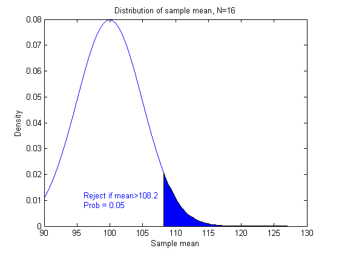
This is how T behaves under the null hypothesis, but what about under an alternative? Our alternative distribution has a mean of 110, as represented by the red curve.
mu1 = 110; y2 = normpdf(x,mu1,sig/sqrt(N)); h2 = line(x,y2,'Color','r'); yhi = [0, y2(x>=cutoff)]; patch(xhi,yhi,'r','FaceAlpha',0.25); P = 1 - normcdf(cutoff,mu1,sig/sqrt(N)); text(115,.06,sprintf('Reject if T>%.4g\nProb = %.2g',cutoff,P),'Color',[1 0 0]); legend([h1 h2],'Null hypothesis','Alternative hypothesis');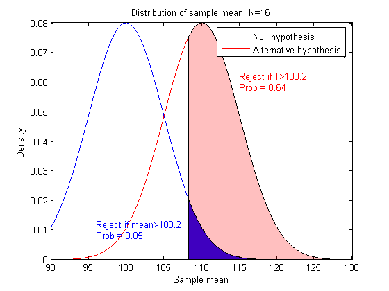
There is a larger chance of rejecting the null hypothesis if the alternative is true. This is just what we want. It's easier to visualize if we look at the cumulative distribution function (cdf) instead of the density (pdf). We can read probabilities directly from this graph, instead of having to compute areas.
ynull = normcdf(x,mu0,sig/sqrt(N)); yalt = normcdf(x,mu1,sig/sqrt(N)); plot(x,ynull,'b-',x,yalt,'r-'); zval = norminv(conf); cutoff = mu0 + zval * sig / sqrt(N); line([90,cutoff,cutoff],[conf, conf, 0],'LineStyle',':'); msg = sprintf(' Cutoff = \\mu_0 + %.2g\\sigma / \\surd{n}',zval); text(cutoff,.15,msg,'Color','b'); text(min(x),conf,sprintf(' %g%% test',100*alpha),'Color','b',... 'verticalalignment','top') palt = normcdf(cutoff,mu1,sig/sqrt(N)); line([90,cutoff],[palt,palt],'Color','r','LineStyle',':'); text(91,palt+.02,sprintf(' Power is 1-%.2g = %.2g',palt,1-palt),'Color',[1 0 0]);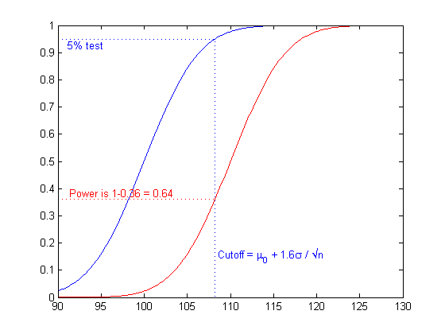
This graph shows the probability of getting a significant statistic (rejecting the null hypothesis) under two different distributions. We can get this same information for many distributions at the same time. The power function is defined as the probability of rejecting the null hypothesis. The power is one minus the cdf. We'll graph the power as a function of N, and select N to achieve a power of 80% when the mean is 110. We can see that we need about N=25.
DesiredPower = 0.80; Nvec = 1:30; cutoff = mu0 + norminv(conf)*sig./sqrt(Nvec); power = 1 - normcdf(cutoff, mu1, sig./sqrt(Nvec)); plot(Nvec,power,'bo-',[0 30],[DesiredPower DesiredPower],'k:'); xlabel('N = sample size'); ylabel('Power') title('Power function for the alternative: \mu = 110')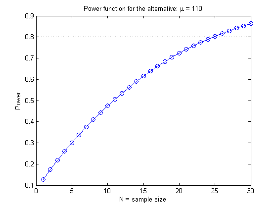
In this overly simple example there is a formula to compute the required value directly to get a power of 80%:
mudiff = (mu1 - mu0) / sig; N80 = ceil(((norminv(1-DesiredPower)-norminv(conf)) / mudiff)^2)
N80 =
25
To verify that this works, let's do a Monte Carlo simulation and generate 400 samples of size 25 both under the null hypothesis with mean 100, and under the alternative hypothesis with mean 110. If we test each sample to see if its mean is 100, we should expect about 5% of the first group and 80% of the second group to be significant.
nsamples = 400; samplenum = 1:nsamples; N=25; h0 = zeros(1,nsamples); h1 = h0; for j=1:nsamples Z0 = normrnd(mu0,sig,N,1); h0(j) = ztest(Z0,mu0,sig,alpha,'right'); Z1 = normrnd(mu1,sig,N,1); h1(j) = ztest(Z1,mu0,sig,alpha,'right'); end p0 = cumsum(h0) ./ samplenum; p1 = cumsum(h1) ./ samplenum; plot(samplenum,p0,'b-',samplenum,p1,'r-') xlabel('Sample number'); ylabel('Proportion significant') title('Verification of power computation') legend('Null hypothesis','Alternative hypothesis','Location','East')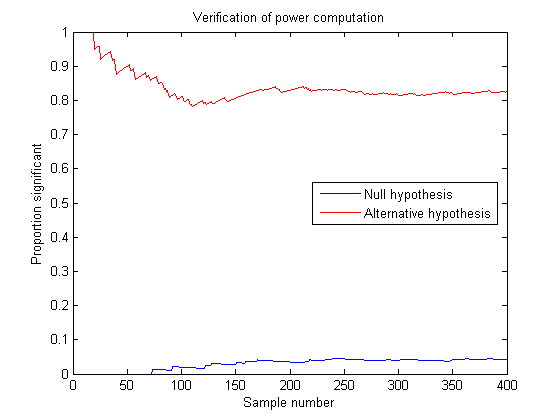
Now let's suppose we don't know the standard deviation, and we want to perform a two-sided test, that is, one that rejects the null hypothesis whether the sample mean is too high or too low.
The test statistic is a t statistic, which is the difference between the sample mean and the mean being tested, divided by the standard error of the mean. Under the null hypothesis, this has Student's t distribution with N-1 degrees of freedom. Under the alternative hypothesis, the distribution is a noncentral t distribution with a noncentrality parameter equal to the normalized difference between the true mean and the mean being tested.
For this two-sided test we have to allocate the 5% chance of an error under the null hypothesis equally to both tails, and reject if test statistic is too extreme in either direction. We also have to consider both tails under any alternative.
N = 16; df = N-1; alpha = 0.05; conf = 1-alpha; cutoff1 = tinv(alpha/2,df); cutoff2 = tinv(1-alpha/2,df); x = [linspace(-5,cutoff1), linspace(cutoff1,cutoff2),linspace(cutoff2,5)]; y = tpdf(x,df); h1 = plot(x,y); xlo = [x(x<=cutoff1),cutoff1]; ylo = [y(x<=cutoff1),0]; xhi = [cutoff2,x(x>=cutoff2)]; yhi = [0, y(x>=cutoff2)]; patch(xlo,ylo,'b'); patch(xhi,yhi,'b'); title('Distribution of t statistic, N=16'); xlabel('t'); ylabel('Density'); text(2.5,.05,sprintf('Reject if t>%.4g\nProb = 0.025',cutoff2),'Color','b'); text(-4.5,.05,sprintf('Reject if t<%.4g\nProb = 0.025',cutoff1),'Color','b');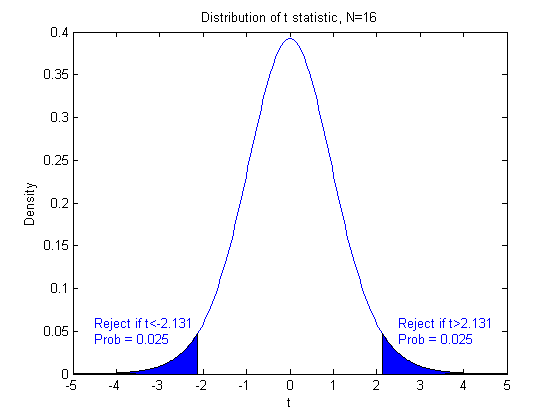
Instead of examining the power function just under the null hypothesis and a single alternative value of mu, we can look at it as a function of mu. The power increases as mu moves away from the null hypothesis value in either direction. Here's a picture of the power function for a sample size N=16.
N = 16; df = N - 1; x = linspace(90,127); ncp = (x - mu0) ./ (sig./sqrt(N)); power = nctcdf(cutoff1, df, ncp) + (1-nctcdf(cutoff2, df, ncp)); plot(x,power); xlabel('True mean') ylabel('Power') title('Power function for N=16')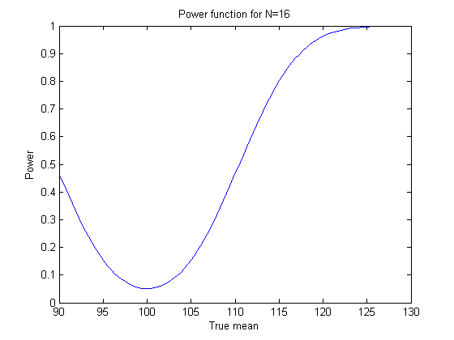
Apparently a sample size of N=16 won't give us the power that we need under the alternative hypothesis. We'll make a plot of the power function for various values of N.
Nvec = 2:40; ncp = (mu1 - mu0) ./ (sig./sqrt(Nvec)); % non-centrality parameter df = Nvec - 1; % degrees of freedom cutoff1 = tinv(alpha/2,df); cutoff2 = tinv(1-alpha/2,df); power = nctcdf(cutoff1, df, ncp) + (1-nctcdf(cutoff2, df, ncp)); plot(Nvec,power,'bo-',[0 40],[DesiredPower DesiredPower],'k:'); xlabel('N = sample size') ylabel('Power') title('Power function for the alternative: \mu = 110')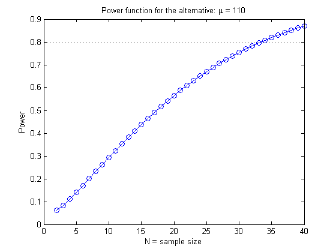
We need a sample size of about 34. Again, let's use 400 samples of this size and see that we get the desired power.
nsamples = 400; samplenum = 1:nsamples; N = 34; h0 = zeros(1,nsamples); h1 = h0; for j=1:nsamples Z0 = normrnd(mu0,sig,N,1); h0(j) = ttest(Z0,mu0,alpha); Z1 = normrnd(mu1,sig,N,1); h1(j) = ttest(Z1,mu0,alpha); end p0 = cumsum(h0) ./ samplenum; p1 = cumsum(h1) ./ samplenum; plot(samplenum,p0,'b-',samplenum,p1,'r-') xlabel('Sample number'); ylabel('Proportion significant') title('Verification of power computation') legend('Null hypothesis','Alternative hypothesis','Location','East')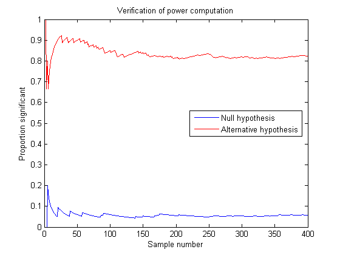
Compared with the previous example, we need to take nine additional observations to allow a two-sided test and to make up for not knowing the true standard deviation.
Now let's turn to the problem of determining the sample size needed to distinguish between two proportions. Suppose that we are sampling a population in which about 30% favor some candidate, and we want to sample enough people so we can distinguish this value from 33%.
The idea here is the same as before. Here we can use the sample count as our test statistic. For any sample size N we can compute the cutoff for rejecting the null hypothesis P=0.30. For N=100, for instance, we would reject the null hypothesis if the sample count is larger than a cutoff value computed as follows:
N = 100; alpha = 0.05; conf = 1-alpha; p1 = 0.30; p2 = 0.33; cutoff = binoinv(conf, N, p1)
cutoff =
38
A complication with the binomial distribution comes because it is discrete. The probability of exceeding the cutoff value is not exactly 5%:
1 - binocdf(cutoff, N, p1)
ans =
0.0340
Once again, let's compute the cutoff value for P=0.30 for a range of sample sizes, and compute the power against the alternative P=0.33 for each one.
Nvec = 50:50:2000; cutoff = binoinv(conf, Nvec, p1); power = 1 - binocdf(cutoff, Nvec, p2); plot(Nvec,power,'bo-',[0 2000],[DesiredPower DesiredPower],'k:'); xlabel('N = sample size') ylabel('Power') title('Power function for the alternative: p = 0.33')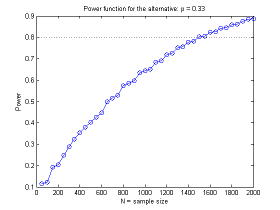
The function is generally increasing, but irregular because the binomial distribution is discrete. Let's look at the probability of rejecting the null hypothesis under both alternatives in the range of samples sizes from 1470 to 1480 using the observed count T as a test statistic.
Nvec = 1470:1480; cutoff = binoinv(conf, Nvec, p1); power = 1 - binocdf(cutoff, Nvec, p2); alf = 1 - binocdf(cutoff, Nvec, p1); subplot(3,1,1); plot(Nvec,power,'ro-',[min(Nvec),max(Nvec)],[DesiredPower DesiredPower],'k:'); ylabel(sprintf('Prob[T>cutoff]\nif p=0.33')) set(gca,'xticklabel','') subplot(3,1,2); plot(Nvec,alf,'bo-',[min(Nvec),max(Nvec)],[alpha alpha],'k:'); ylabel(sprintf('Prob[T>cutoff\nif p=0.30')) set(gca,'xticklabel','') subplot(3,1,3); plot(Nvec,cutoff,'go-'); xlabel('N = sample size') ylabel('Cutoff')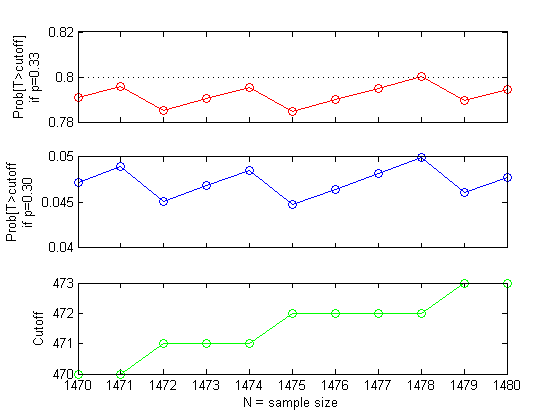
This plot reveals that the power function curve (top plot) is not only irregular, but also it decreases at some sample sizes. These are the sample sizes for which it is necessary to increase the cutoff value (bottom plot) in order to keep the size (middle plot) no larger than 5%. The smallest sample size that gives the desired power of 80% is N=1478:
min(Nvec(power>=0.80))
ans =
1478
In the examples we've considered so far, we were able to figure out the cutoff for a test statistic to achieve a certain size, and to calculate the probability of exceeding that cutoff under alternative hypotheses. For our final example, let's consider a problem where that is not so easy to do.
Imagine we can take samples from two variables X and Y, and we want to know what sample size we would need to test whether they are uncorrelated versus the alternative that their correlation is as high as 0.4. Although it is possible to work out the distribution of the sample correlation by transforming it to a t distribution, suppose we don't know how to do that.
For a given sample size, we can use Monte Carlo simulation to determine an approximate cutoff value for a test of the correlation. Let's do a large simulation run so we can get this value accurately. We'll start with a sample size of 25.
nsamples = 10000; N = 25; alpha = 0.05; conf = 1-alpha; r = zeros(1,nsamples); for j=1:nsamples xy = normrnd(0,1,N,2); r(j) = corr(xy(:,1),xy(:,2)); end cutoff = quantile(r,conf)
cutoff =
0.3361
Then we can generate samples under the alternative hypothesis, and estimate the power of the test.
nsamples = 1000; mu = [0; 0]; sig = [1 0.4; 0.4 1]; r = zeros(1,nsamples); for j=1:nsamples xy = mvnrnd(mu,sig,N); r(j) = corr(xy(:,1),xy(:,2)); end [power,powerci] = binofit(sum(r>cutoff),nsamples)
power =
0.6680
powerci =
0.6378 0.6972
We estimate the power to be 66%, and we have 95% confidence that the true value is betwen 63% and 69%. To get a power of 80%, we need a larger sample size. We might try increasing N to 30, estimating the cutoff value for this sample size, and repeating the power simulation.
nsamples = 10000; N = 30; alpha = 0.05; conf = 1-alpha; r = zeros(1,nsamples); for j=1:nsamples xy = normrnd(0,1,N,2); r(j) = corr(xy(:,1),xy(:,2)); end cutoff = quantile(r,conf) nsamples = 1000; mu = [0; 0]; sig = [1 0.4; 0.4 1]; r = zeros(1,nsamples); for j=1:nsamples xy = mvnrnd(mu,sig,N); r(j) = corr(xy(:,1),xy(:,2)); end [power,powerci] = binofit(sum(r>cutoff),nsamples)
cutoff =
0.3081
power =
0.7190
powerci =
0.6900 0.7467
This sample size is still not enough, but we can continue experimenting with different sample sizes this way until we get the power we require.
The probability functions in the Statistics Toolbox can be used to help determine the sample size required to test a number of hypotheses and achieve a desired level of power under a specified alternative. In different problems the sample size can be compute directly, or by searching over a range of sample sizes until the right value is found. Random number generators can help verify that the desired power is met, and can also be used to study the power of a specific test under alternative conditions.